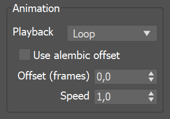
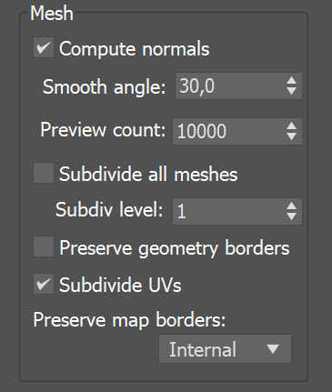

VRayProxy
This page provides information on V-Ray Proxy Objects.
Overview
VRayProxy imports a geometry from an external mesh at render time only. The geometry is not present in the 3ds Max scene and it only takes up the necessary resources for its preview. This allows the rendering of scenes with many millions of triangles, more than 3ds Max itself can handle. Furthermore, V-Ray provides caching of the preview to speed up the viewport performance.
VRayProxy can load meshes, hair and particles data from .vrmesh files and it also directly supports Alembic files . Additional information on creating respective asset files and using them can be found in the Working with vrmesh Files and the Alembic Support page.
It is important to realize that the mesh is in a "ready to render" format. No further modifications to the mesh are expected. If you need to make changes to the mesh, you can import it from the VRayProxy as an Editable Mesh (see the Import section below), edit it and then re-export it and reload it in the VRayProxy . T his works for mesh files which do not originally include animation.
When a modifier is added, the proxy loses its memory-saving properties and is regarded as just a regular mesh in the scene. Therefore, it is recommended to perform modifications on the original mesh prior to exporting it to vrmesh or alembic and not the VRayProxy object.
The Show whole mesh display type should be used for the VRayProxy if modifiers are applied.UI Path: ||Create menu|| > V-Ray > V-Ray Proxy
||Create menu|| > V-Ray > V-Ray Proxy
click in viewport
||V-Ray Toolbar|| > V-Ray Proxy button
||Command panel|| > Create tab > Geometry > V-Ray category > V-Ray Proxy button, then click in viewport
A VRayProxy object can be created by dragging and dropping a .vrmesh or .abc file directly in your active viewport. Please note that the current production renderer should be set to V-Ray in order for this functionality to work.
Importing a Mesh from a File
A Mesh file loaded in a VRayProxy can be imported as an actual mesh in the scene. This can be done in the following ways :
-
Use the Import as mesh button from the interface.
-
Direct import from MaxScript: Select the VRayProxy object you want to import the mesh from and then use the vrayMeshImport() function. For more information, please see the MaxScript page.
The function returns an array of the newly created mesh objects, or undefined when there are no valid VRayProxy objects specified.
Proxy Files
Mesh file – Specifies the source .vrmesh or .abc file. The Browse button opens the Choose external mesh file window, allowing the navigation to the mesh file that will be used. Property tags can be used in the file path as a way of creating a template file path. This gives the user the ability to change the mesh file for each instance of the proxy object. See the Template File Paths Using Property Tags example below.
Preview override – The specified file (.vrmesh or .abc) used to override the VRayProxy display in the Viewport when the Display mode is set to preview from file (edges) or preview from file (faces). The Browse button opens the Choose external mesh file window, allowing the navigation to the mesh file that will be used to override the VRayProxy display.
Expand # to frame number – When enabled, the symbol "#" can be used in the file name to specify that the loaded proxy is a part of an animation sequence. V-Ray then loads the other frames accordingly.
Example: Template File Paths Using Property Tags
Property tags provide a great amount of flexibility with V-Ray Proxy objects by allowing users to template file paths. By using property tags in the Mesh file path, the user can specify different mesh files for each instance of the proxy object.
Tags are defined inside a path between the < and > brackets. Tags can be assigned different values for each node in the User Defined tab of the Object Properties window. At render time, V-Ray takes the tag name and looks it up in the node's User Defined properties to determine the value of the tag.
For example, suppose there are several different tree mesh files with names such as "Willow.vrmesh", "Birch.vrmesh", etc. The user can specify the path in Mesh file as E:\Assets\<asset>.vrmesh. Then in the User Defined Object Properties of the V-Ray Proxy object, the value of the tag can be set to any of the mesh file names . For example, asset=Willow or asset=Birch. During rendering, V-Ray evaluates the tag for each instance of the proxy object and loads E:\Assets\Willow.vrmesh or E:\Assets\Birch.vrmesh.
Property tags are also implemented similarly with the VRayBitmap texture map.
Check the Using Custom Attributes to Match Proxy and Material tutorial for further information.
Workflow: VRayProxy and Displacement
In order to render a VRayProxy with displacement correctly, you have to follow a few steps first.
-
Make sure the VRayProxy has a distinct polygon material ID for the areas you want displaced.
-
Make sure these areas have proper mapping on them.
-
Attach a displacement map to the respective Multi/Sub-Object sub-material.
-
Select the VRayProxy and add a V-Ray Displacement Modifier to it.
-
Enable the Use object mtl option in the V-Ray Displacement Modifier options.
Alembic Layers
This rollout becomes active only if the loaded proxy file is in .abc file format.
The Alembic layers feature allows modification of a selected alembic proxy by adding layer files on top of it. Each layer transforms the proxy with a different set of properties. These transformations include adding properties to a shape (e.g. UV mapping of an object that has no UVs), overriding properties, adding new objects, pruning objects or properties, replacing an object's (or properties') hierarchy with a new one, etc.
You can combine different cache files. Whenever the same object is found in a layer, all of its properties are considered.
Num layers – Specifies how many layers to include.
Each layer's effect can be enabled or disabled by the checkbox.
Browse button – Browse for an .abc file to use as a layer.
Proxy Params
Display – Controls the display of the proxy in the viewports. Please note that proxy preview information is cached by default. For more information see the Preview cache options.
bounding box – Represents the mesh as a box in the viewports.
preview from file (edges) – Displays the mesh preview info that is stored in the .vrmesh file, but only shows the edges of the object.
preview from file (faces) – Displays the mesh preview info that is stored in the .vrmesh file, but only shows the faces of the object.
point – Represents the mesh as a point.
show whole mesh – Previews the entire mesh.
Preview level – Reads the subdivision levels as they were in the original Mudbox setup and a preview can be loaded for the proxy with the corresponding faces. Level 0 has the lowest face count.
LOD Scale – Sets the maximum number of pixels an edge can span over before it is subdivided. This way you can control the loaded vrmesh level for rendering.
Scale – Allows the proxy geometry to be quickly scaled up or down.
Flip axis – When enabled, switches between the Y and Z-axis of the proxy being used as a vertical axis. It aligns the vertical axis of the proxy with the vertical axis in the scene in cases where the proxy was not exported from 3ds Max or when loading Alembic files.
Animation
Playback – Specifies a mode for playing back animation.
Loop – Loops the animation skipping back to the first frame once it has finished.
Play once – Plays the animation just once.
Ping-pong – Loops the animation by playing it backwards once the last frame has been reached, and then playing it forward again when the first frame is reached.
Still – Does not play the animation. Instead, just one frame of the animation is shown. The user can select which frame is displayed with the Offset (frames) parameter.
Use alembic offset – When this option is enabled, the offset (frames) is set to the default value taken from the alembic file. It disables the Offset (frames) parameter.
Offset (frames) – Offsets the beginning of the animation by given number of frames. Positive and negative values can be used.
Speed – A multiplier for the speed of the animation. Negative values make the animation play backwards.

Import
Import as mesh – Imports the geometry from the .vrmesh as an Editable Mesh object. Note that the new mesh is created at the coordinate system origin (0,0,0), and not at the current location of the VRayProxy object.
If the proxy has multiple objects in it, when importing as а mesh, they are put into a single mesh, resulting in a different structure and coloring. Before using the Import as mesh button, make sure the Export each selected object in a separate file option is selected. It is located in the V-Ray mesh export menu, which can be accessed by right-clicking on the viewport and selecting V-Ray mesh export. This allows for accurate results when mapping with VRayMultiSubTex , Random by element mode.
Use explicit normals – In cases where the original mesh has explicit information about vertex normals, this information is also saved in the .vrmesh file when the mesh is exported. Enabling this option makes sure that the explicit normals information contained in the proxy is taken into account during the import.
Weld vertices in result – During a .vrmesh file export, V-Ray might split the original mesh into smaller chunks that can be loaded independently of one another. This can cause some vertices to be duplicated in more than one chunk. Enabling this option causes V-Ray to perform a weld operation after the mesh is imported so that split vertices are merged.
If Weld vertices in result is checked when importing a proxy as a mesh, the structure and color of the mesh differs from the original. In order to keep the color of the mesh and the original proxy the same, the Weld vertices in result option should be unchecked.
Point cloud
Point clouds provide a simplified geometric representation of the mesh in the form of 3D disks with different levels of detail. Each level comprises of disks with equal radius lengths which is greater for levels of lower detail and smaller for the more detailed ones. When the object is rendered, a point cloud geometry level is chosen depending on the distance between the object and the camera; for distant objects, lower resolution point clouds are used. Thus the original mesh is replaced by the simpler point cloud geometry with the appropriate level of detail allowed by distance.
Use if present – Enables the usage of point cloud data if available.
Level multiplier – Determines the waypoint cloud levels are loaded. A value of 1.0 means that the level to load is determined exactly by the distance from the camera to the object. A value smaller than 1.0 means that the level is of greater detail than required by distance. Values greater than 1.0 mean that the resolution of the level is smaller than the one determined by distance. A value of 0.0 means that no point cloud level is loaded and the original mesh is rendered instead. For more information, see the Level Multiple Parameter example below.
Example: Level Multiplier Parameter
This example demonstrates how the Level multiplier parameter controls proxy rendering at different distances to the camera. When the value is 0.0, no point clouds are loaded. When the value is 1.0, the exact level of detail is loaded for rendering according to the object's distance from the camera. Values between 0.0 and 1.0 bring more detail than specified at the camera distance, while values higher than 1.0 bring less detail than specified.
Zoom is 0.5x
Zoom is 1x
Zoom is 2x
Level multiplier = 0.0


Level multiplier = 1.0


Level multiplier = 10.0

Compatibility
Force first map channel – When enabled, V-Ray forces the first mapping channel stored in the proxy file (.vrmesh or .abc) to be remapped to the specified 3ds Max map channel.
First map channel – If Force first map channel1 is enabled, this value specifies the index of the map channel.
In older V-Ray versions, UV coordinates in the Alembic file were always imported as mapping channel 0. This meant that in Bitmap textures for materials applied on Alembic proxy objects, you needed to select Vertex Color Channel.
This was essentially the same as when bringing in .vrmesh files created in other applications (e.g. Maya).
Particles
Render mode – Controls how particles are rendered.
Sphere – Renders particles as spheres.
Point – Renders particles as points
Hair
Tessellate hair – Enables dynamic tessellation using the Edge length value.
Edge length – The edge length used for dynamic tessellation.
Proxy Mesh Visibility
These options control the visibility of a proxy's components when more than one mesh is stored in the same vrmesh or alembic file. The visibility can be controlled either by the objects' names or by object IDs.
List type – Specifies the meaning of the lists.
Exclude– When enabled, the selected objects in the list are invisible.
Include – When enabled, only the selected objects in the list are visible.
Object name list – Lists all the object names in the proxy file. Enable the objects to be included or excluded.
Object id list – Lists all the Object IDs in the proxy file. Enable the Object IDs to be included or excluded.
Proxy Hair Visibility
List type – Specifies the meaning of the lists.
Exclude – When enabled, the selected objects in the list are invisible.
Include – When enabled, only the selected objects in the list are visible.
Object name list – Lists all the object names in the proxy file. Enable the objects to be included or excluded.
Object id list – Lists all the Object IDs in the proxy file. Enable the Object IDs to be included or excluded.
Proxy Particle Visibility
List type – Specifies the meaning of the lists.
Exclude – When enabled, the selected objects in the list are invisible.
Include – When enabled, only the selected objects in the list are visible.
Object name list – Lists all the object names in the proxy file. Enable the objects to be included or excluded.
Object id list – Lists all the Object IDs in the proxy file. Enable the Object IDs to be included or excluded.
Alembic Params
This section holds the controls for the V-Ray proxy when an Alembic file (.abc) is loaded.
General
Starting object – Specifies a starting path in the Alembic file, that is, a path to a component in the mesh hierarchy structure. Only meshes below the specified component are rendered.
Use full names – When enabled, the full path to each geometry set in the Alembic file is displayed in the Proxy mesh, hair and particle visibility lists. This option is especially useful when you want to determine a proper starting object path.
Recompute bounding box – When enabled, forces V-Ray to re-compute the bounding box for the geometry before rendering. When disabled, V-Ray uses the bounding box specified in the Alembic file. However, sometimes these bounding boxes are not correct, and rendering will also be incorrect. Enable this option to avoid such issues. Note that this option might slow down rendering.
Instancing – When enabled speeds up and optimizes the memory during rendering of alembic files which contain instances.

Mesh
Compute normals – When enabled, forces smoothing on geometry normals in cases where they were not originally smoothed.
Smooth angle – When Compute normals is enabled, faces that meet at angles below this angle are smoothed. Units are in degrees.
Preview count – Specifies how many faces are used to show a preview of the proxy in the viewport.
Subdivide all meshes – When enabled, subdivides the meshes by the Subdiv level.
Subdiv level – Controls the amount of subdivision to apply to the meshes.
Preserve geometry borders – When enabled, the subdivided geometry falls within the borders of the original mesh.
Subdivide UVs – When enabled, the UVs of the object are also subdivided.
Preserve map borders – Specifies which map borders remains unchanged.
None – No map borders are preserved.
Internal – Preserves only internal map borders.
All – Preserves all map borders.

Hair
Preview count – Specifies how many splines are used to show a preview of the proxy hair in the viewport.
Width multiplier – Controls the hair width during rendering.
Particles
Preview count – Specifies how many particles to show in the viewport.
Width multiplier – Controls the size of the particles when rendering.
VRayProxy particles emission via standard 3ds Max interface allows plugins, such as VRayInstancer and Phoenix, to utilize alembic particle data.
The table below gives additional information about alembic particle data mapping to the 3ds Max particle interface.
|
IParticleObjExt Accessor |
Alembic Channel Alias |
Alembic Data Type (Raw) |
Alembic Units (Raw) |
|
GetParticleBornIndex(…) |
|
|
|
|
|
[alembic native ID channel] |
uint64 |
|
|
GetPosition(…) |
|
|
|
|
|
[alembic native position channel] |
float[3], int[3] |
Units are generator-dependent (meters/cm…;feets/inches/...) |
|
GetScale(…) |
|
|
|
|
|
scale |
float[3] |
|
|
|
.scale |
float (uniform scale) |
|
|
|
scaleXYZ |
float[3] |
|
|
GetScaleXYZ(…) |
|
|
|
|
|
scale |
float (uniform scale) |
|
|
|
.scale |
float[3] (the x-scale component is used as uniform scale fallback) |
|
|
|
scaleXYZ |
float[3] (the x-scale component is used as uniform scale fallback) |
|
|
GetParticleOrientation(…) |
|
|
|
|
|
orient |
float[4] - quaternion (x, y, z, w) |
|
|
|
.orientation |
float[4] - quaternion (w, x, y, z) |
|
|
|
orientation |
float[4] - quaternion (w, x, y, z) |
|
|
|
rotation |
float[4] - quaternion (w, x, y, z) |
|
|
|
rotationPP |
float[3] - Euler angles |
degrees |
|
GetAge(…) |
|
|
|
|
|
.age |
float |
seconds |
|
|
age |
float |
seconds |
|
GetLifetime(…) |
|
|
|
|
|
.life |
float |
seconds |
|
|
life |
float |
seconds |
|
GetVelocity(…) |
|
|
|
|
|
If possible compute from particle positions in adjacent frames |
float[3] |
generator-units/frame |
|
|
[alembic native velocity channel] |
float[3] |
generator-units/frame |
|
GetSpin(…) |
|
|
|
|
|
spin |
float[3] – Rotation axis vector with magnitude denoting the angle |
radians/second |
|
|
.angularvelocity |
float[4] – quaternion |
rotation_delta/second |
-
Raw floats could be half-, single-, or double-precision.
-
It is allowed to have either uniform (float) or non-uniform (float[3]) format with any scale channel alias. However, it is recommended the above specification to be followed precisely.
-
It is allowed to have either Euler angles or quaternion with any orientation channel alias. However, it is recommended the above specification to be followed precisely.
Notes
-
Standard shadow maps do not include information about the proxy objects. If you want the proxy objects to cast shadows, you should use the VRayShadow shadow type.
-
The proxy preview cache depends on the chosen Display type. It may need a reset to function properly. See the Preview cache options for more information.
-
Starting with V-Ray 3.0, you can use the Force first map channel option to remap the 0th mapping channel to the more usual map channel 1.